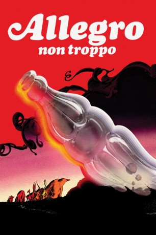

#12037 Allegro non troppo
 
 IMDB-Wertung: 7.5 / 10
IMDB-Wertung: 7.5 / 10  Tomatometer: 89
Tomatometer: 89  Metascore: 0
Metascore: 0 
Begeistert kündigt der Leiter eines Konzerthauses eine ganz besondere Vorstellung an: Ein berühmter Animator wird sechs Musikstücke berühmter klassischer Komponisten mit fantasievollen Geschichten bebildern. Zu Ravels "Bolero" etwa verwandeln sich die letzten Tropfen aus einer Colaflasche in wilde Ungetüme; Stravinskys "Feuervogel" untermalt die Episode um eine Schlange, die vom "Baum der Erkenntnis" nascht und es mit dem Teufel zu tun bekommt. Zwischen den sechs Zeichentrickepisoden kommt es im Konzertsaal zu skurrilen Auseinandersetzungen zwischen dem Zeichner, dem Dirigenten und dem Direktor.
Jahr: 1976
Dauer: 84 Minuten
FSK: 6
Land: Italien Studio: AtlasTonspuren:
Untertitel: Deutsch,
Auflösung: 1080p (1792x1080) Größe: 5591 MB
Genre: Musik, Komödie, Fantasy, Animation/Trick, Liebe
Regisseur: Bruno Bozzetto
Drehbuch: Bruno Bozzetto, Guido Manuli, Maurizio Nichetti
Soundtrack:
Darsteller:
- Maurizio Nichetti als The Animator
- Angela Finocchiaro als Orchestra's Member (uncredited)
- Marialuisa Giovannini als The Cleaning Girl
- Néstor Garay als The Orchestra Master
- Maurizio Micheli als The Presenter
- Mirella Falco als Non-Exercising Orchestra Member
- Osvaldo Salvi als Man in gorilla costume
- Jolanda Cappi als Fallen Orchestra Member
- Franca Mantelli als Dancing Orchestra Member
- Bruno Bozzetto als Man in Rocking Chair (uncredited)
Datei: X:\Kinder Collections\Bruno Bozetto\Allegro non troppo (1976, FSK6, 1792x1080).mkv seit 16.11.2019
Festplatte: Kinder-Filme+Trick
 Alle Filme aus Gruppe 'Kinder Collections\Bruno Bozetto'
Alle Filme aus Gruppe 'Kinder Collections\Bruno Bozetto'